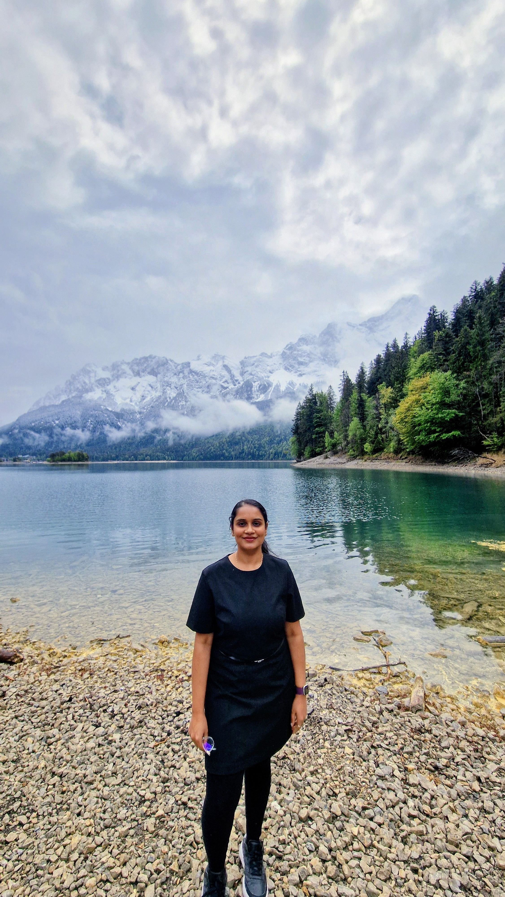

A product designer who turns complex, data-heavy products into things people actually understand. Engineer by training, endlessly curious by nature — and happiest when a hard problem finally clicks into something simple.

I grew up in a small village in India, where things were simple and resources were few. We didn't have fancy gadgets or design tools — but we had stories, colors, and a lot of imagination. I was the kid who asked endless questions, took things apart, tried to fix them (sometimes badly), and spent hours sketching just for the joy of it.
When I moved to the city to study engineering, I thought I was choosing the practical path. But somewhere between algorithms and circuits, I found myself far more interested in why things were built than how. I cared about how people actually used technology — what frustrated them, what made them smile. That curiosity, plus my love for art, slowly pulled me toward design.
"I'm still that curious kid from a small village — just with better tools and a wider world to explore."
It wasn't a straight line. I learned by observing, by building, by making mistakes, and by staying endlessly curious. Over time I stopped thinking of the work as designing screens and started seeing it as solving real human problems with clarity — whether that was making ML outputs readable at Happymonk.ai, or turning a confusing credit score into something a person at bonify could actually understand.
Today I live in Nürnberg — a city that blends history and creativity, a lot like my own journey. I feel lucky to work in a field where listening to people, thinking deeply, and crafting meaningful experiences isn't just valued, it's the whole point.
I was the sole designer on a fintech platform used by millions of people. That means I ran discovery, shaped problem definitions, built the design system, set up critique rituals, did the research, shipped the work, and then measured whether it did what we thought it would.
This was a founding-team role, which meant wearing a lot of hats — including making the case for design having a seat at the table before there was even a table.
Conducted usability tests and implemented iterative improvements in collaboration with the engineering team, enhancing user satisfaction across high-interaction workflows
I'm learning German slowly and deliberately — the same way I approach most things.